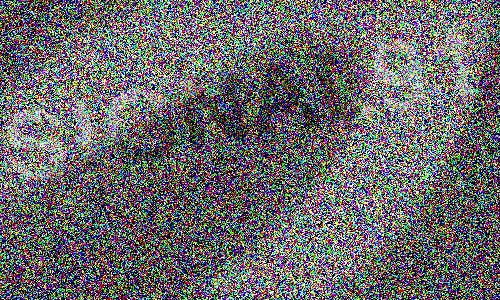

Frammento 03 — Supporto danneggiato
Signal recovery
Il frame è quasi illeggibile, ma i dati non sono scomparsi. Recupera il contrasto tra le informazioni e lo sfondo, quindi trascrivi la stringa.
Anni di assistenza informatica e recupero dati hanno insegnato una regola semplice: ciò che sembra perduto spesso è ancora presente, ma richiede gli strumenti giusti per essere visto.
